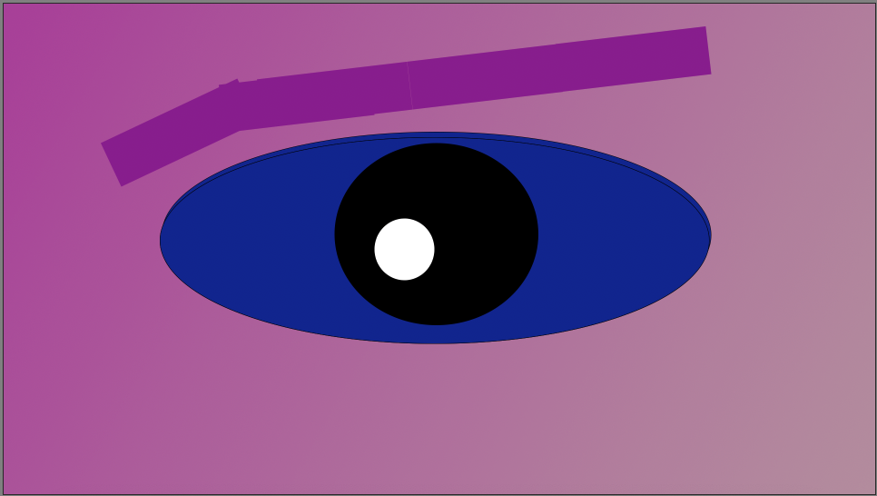
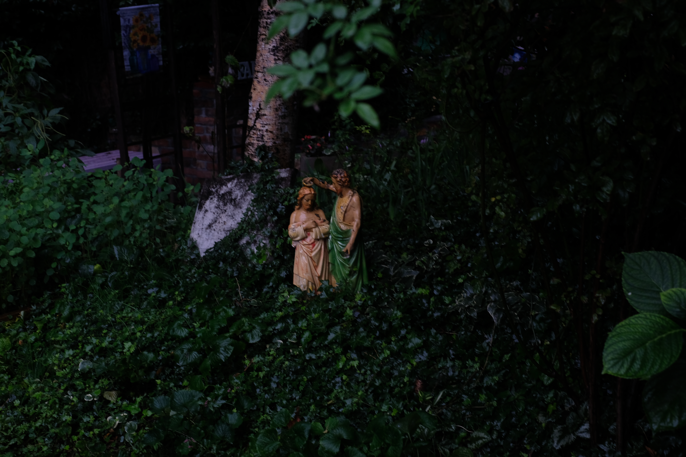
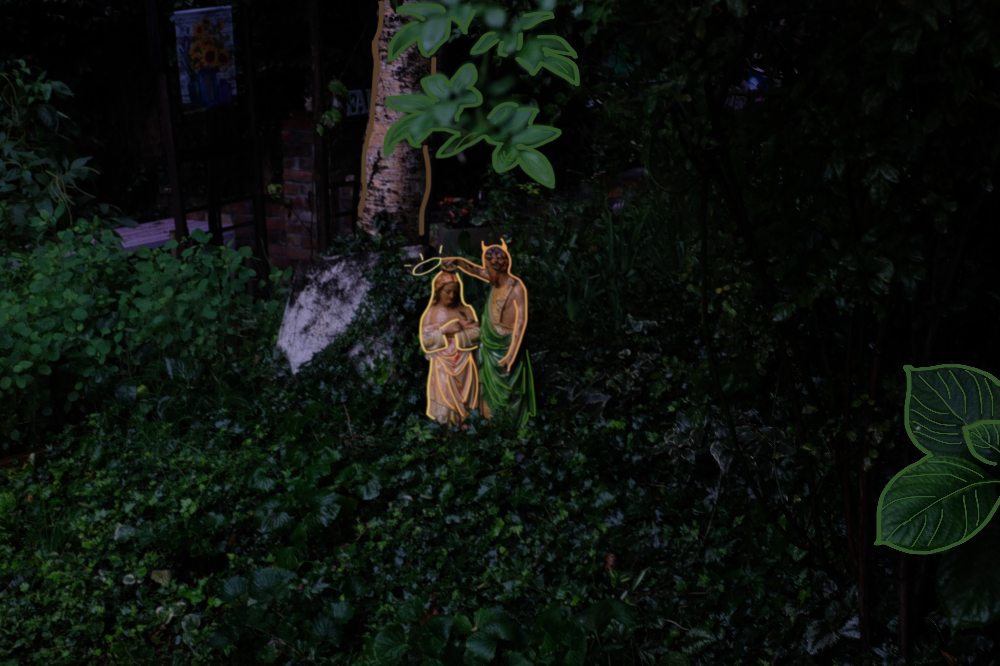

This orginal photo was taken by me in 2024, it is a photo of a garden that I found in the Bronx at the Bronx Doumentary Center, where I stuided photography for a few months. The reason I had chosen to take this picture here is because I love the religous statue in the middle of the lush nature. I found it very beaufitul that this statue was surrounded by such nature. In the photograph I took however, it does not completly capture the beauty of the garden and the details of the statue. Through the editied picture I have drawn out and highlighted the statues in the garden to make them more visible and to make the photo more visually interesting. I also wanted to add the sort of comic style to this picture, as the lighting and focus is very much surrounded by the dark green leaves and adding the outline and comic feel shifts the focus back into the statues. In the original photo, the focus of the camera goes to the leaves on the side, slightly mising the beauty of the statues. I wanted to make the statues more visible and the focus of the photo, by blurring the other leaves but still keeping the same leaves in focus.